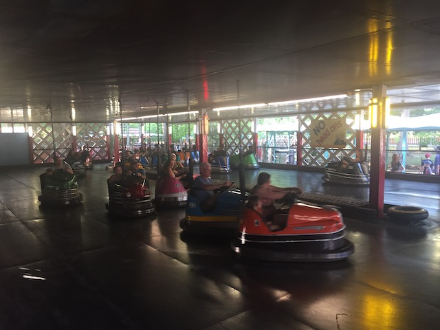
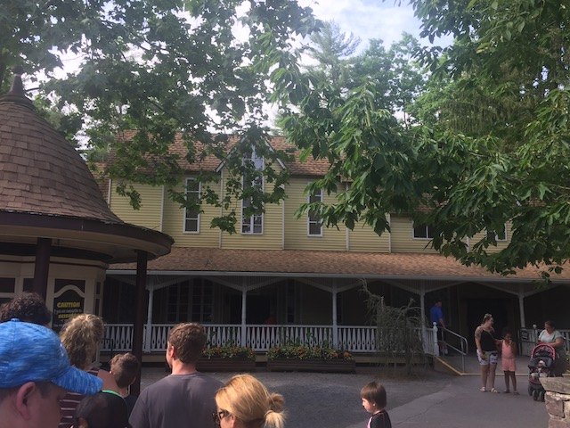
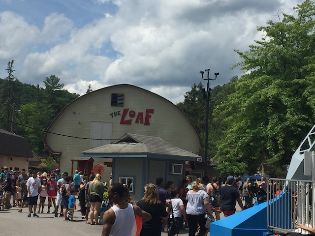

Knoebels is one of those amusement parks that doesn't look like anything special and not worth checking out, but you get here and it's an AMAZING PARK!! Now, if you're unfamiliar with the park's really good reputation and simply look at it based off its rides, this seems strange. There's only two wooden coasters, a decent sized steel coaster, and some old flat rides. Why is this place so good? Well, I'll explain in this reveiw. But....yeah. KNOEBELS KICKS MAJOR ASS!!! This is not like a typical amusement park where only the roller coasters matter and everything else is just a bonus. At Knoebels, everything matters. From the coasters, to the flat rides, to the food. It is all important at Knoebels. Not many parks in America really have a feel like Knoebels does. It's far more similar to your typical European Theme Park than your typical American Theme Park. Knoebels definetly has a family feel to the park and a lot of the stuff in the park have a homemade feel to it. Hell, a couple of the roller coasters and flat rides really are homemade. But most importantly, Knoebels cares about the quality of everything in their park. Everything at Knoebels is of high quality and is an enjoyable experience. And to top it all off, Knoebels is actually a relatively cheap park. Park Admission is free, and tickets for the rides are actually affordable! Hell, sometimes, it's actually cheaper to just pay for each individual ride instead of getting the wristbands. That really says a lot about Knoebels. It's a great park with great rides at a great price. What more do you want.
Here are the reviews of all the Flat Rides at Knoebels. Now Knoebel's flat ride collection is very interesting. All the flat rides here actually mean something. Either it's a rare unique flat ride, it's one of the best of it's kind, or it's just a clone of an already great flat ride. So as you can see, Knoebel's flat ride collection is definetly worthy of an A+. So yeah. Let's start out with their best of their kind flat rides. First up, the Flyers. These are without a doubt, the most famous flyers in the coaster community. Why? Because these things snap REALLY easily. And unlike some other parks, which tend to have sticks up their ass in regard to their flyers, Knoebels encourages snapping. And that's the best part of flyers. There's their bumper cars. It may not seem like it, but these ones are made of fiberglass. So you get a stronger impact than usual. And trust me. That really makes it more fun. Easily the best bumper cars. Also, they have a classic carousel. I know it's normally nothing. But here, it's the carousel with the gold rings that you feed to the lions. I always enjoy that. OK. Onto some more...unique rides. Like Looper. Now Looper, is a squirrel cages looping ride. While it's extremely popular in Japan, they are incredibly rare in America. Now unique doesn't always mean high quality, and that is true in Looper. It's a very intersting experience. You sit in a cage, only held in by a seatbelt. At first, you just spin, and you can't touch the pedal. About a minute into the ride, you can press the pedals. Now you're probably asking "What do the pedals do?" Well, you flip the ride by using the pedals. Yep. It's a manual ride. You have to make yourself go upsidedown. And it's not very easy. Not easy at all (This is probably why it's not popular in America). While I've seen many people get the hang of it and flip like crazy, I always went up 179 degrees, and then fell back down. But what really annoyed me on Looper, were the restraints. Now, I normally like it when rides just have a seatbelt and not OTSRs. But there's always an exception to the rule, and this is one of those times. When you're trying to get upsidedown, you sort of hang there sometimes. And just let me say this. Having all your weight on your thighs hurts. But nevertheless, it's a very fun ride and is something that I would recommend you try if you're at Knoebels and want to do something new. Now, the final flat ride I managed to do while at Knoebels is Power Surge. Now Power Surge, unlike Looper, is a fairly common flat ride in America. Many parks here have Power Surges. However, with that said, this is a very fun flat ride. It's very intense, can flip you around quite a lot, and your thighs don't even hurt in the slightest bit. =) So all I really have to say about Power Surge is that if you've never ridden one before, DO IT!!! If you have been on a Power Surge, judge for yourself based on how you liked your last Power Surge ride, how much time you have at Knoebels, and how important it is to you. While that concludes all the flat rides that I did at Knoebels, there many more flat rides at Knoebels that I did not do on either of my visits. Next up is called Downdraft. I may not have ridden it here, but I can verify from riding a clone of it at another park that this ride is a ton of fun and has A LOT of laterals. And while their falling star may seem like an ordiary falling star, it's actually married. So if you've ridden their falling star, you've commited adultery. Aside from these, Knoebels also has a frisbee, a Roll-O Plane, an indoor music express, a whip, a wipeout, a round up, a pirate ship, some chairswings, a paratrooper, a tilt a whirl, a scramler, a spiral slide, some teacups, a ferris wheel, and a rockin tug.
Here are the legendary flyers at Knoebels.
Here is the incredibly rare Looper.

Unquestionably the best bumper cars ever.
Dark Rides
Knoebels doesn't really have much of a dark ride collection. They only have one dark ride there. And it's an upcharge. But luckily, it's pretty good. OK. It's not the best ride ever by any means. It's honestly a combination of both Terror Ride & Dracula's Castle @ Lagoon. The two of those rides put together. So I enjoyed it. But if cheesiness isn't your thing, then this probably isn't a ride for you. Especially given the fact that it's an upcharge.

It may be cheesy, but it's still a fun ride.
Water Rides
I never rode any of the water rides at Knoebels. But from what I saw, none of what they have is special. All I saw was a log flume, and a shoot the chutes. These are fairly common flat rides and I don't think missing these was a big deal. But hey. This is Knoebels. So there could very well be some hidden charm in these ordinary water rides that I just can't see right now.
Dining
As I have already mentioned before, Knoebels kicks ass in the food department. All the food here is of really really high quality and is very delicous. Now the most notable food I had there Cesari's Pizza. Everyone who goes to Knoebels talked very highly about Cesaris Pizza (Well, almost everybody). So naturally, I ate here. While I personally couldn't say that it was amazing and fantastic, particuarlty when compared to NYC Pizza and Italy Pizza, I can say this. It's much better than typical amusement park crap pizza. Sadly, the pizza is not there anymore. Which is a bummer. But hey. At least they're trying to replace it with an authentic Italian style Pizza. I'll be sure to try them on my next visit. See how good they really are. They have tons of other stuff that I look foreword to trying on future visits. Knoebels seems like the type of park where you shouldn't get a meal, but rather just snack your way through the park to try all that they have. And that's not even the best part of all of this. IT'S ACTUALLY CHEAP!!! Seriously, unlike almost all other parks, you don't feel like you're getting price-gouged here! So don't be afraid to go nuts! This place is cheap! So yeah. Knoebels exceeds with flying colors in the food department. A+
This is all that was left of my pizza by the time I remembered to put a photo of it in the update.
Theming and Other Attractions
Here are the reviews of all the other stuff at Knoebels. Well, as far as theming goes, Knoebels really doesn't have much. It's mostly a campground amusement park in the middle of freaking nowhere. Not much theming except for Pennsylvania Forests are seen here. But really Knoebels doesn't really need much theming. The park's campground atmosphere fits the park perfectly and is lovely. You really don't need to theme Knoebels as it's not the type of park where theming would even look good. But Knoebels still has some interesting theming. They have the Bread Building, which is a building shaped like a loaf of bread. I'm not sure if it's a symbol that the park makes their own bread or if it's just there for the hell of it, but either way, I like it and really think it contributes to Knoebel's quirky atmosphere. That's all of Knoebel's theming that I saw. There might be more, I'll just have to go back and see. And Knoebels has a ton of other stuff to do. There's a lot of games, mini golf, a swimming pool, and just so much other fun stuff.

There's the building shaped like a loaf of bread.
In Conclusion
Knoebels is a FANTASTIC theme park. I love everything about this theme park. They have high quality wooden coasters, some of which are even Top 10 worthy, fantastic flat rides, cheap delicous food, and a nice woodsy atomsphere that just screams "FUN!!!". Knoebels knows how to keep it's customers happy and how to make a theme park just plain fun for everyone. It's park that has earned its really high reputation in the coaster enthusiast community for a reason. The hype is real. Come to Knoebels. This park kicks ass, and is extremely cheap!!! Cheap Food, Cheap Tickets, It's just cheap, only with a high quality feel to it. One of the best deals you can find in amusement parks.
Enthusiast FAQs.
*Are there kiddy coaster restrictions? - No. Kozmo's Curves has no restrictions for adults.
Tips
*Don't get lost when trying to get to Knoebels (The roads around the area are VERY confusing).
*Knoebels does allow POVs with a GoPro, but you have to get a permit for it (which is very easy to do).
*Always carry a park map so you don't get lost once you are inside Knoebels (Knoebels has a VERY confusing park layout).
*Don't automatically assume the All Day Wristband is the cheaper option (Tickets here are VERY cheap).
*Spend A LOT of time at Knoebels (3 hours BARE MINIMUM, Full Day Recommended).
*Check out all the rare and unique flat rides (Knoebels IS NOT a credit whoring stop).
*If you ride the Falling Star, prepare to become an adulterist (It's a married ride).
*Snack your way around the park (The food is both incredibly good and incredibly cheap).